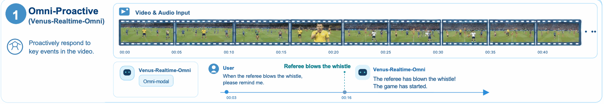
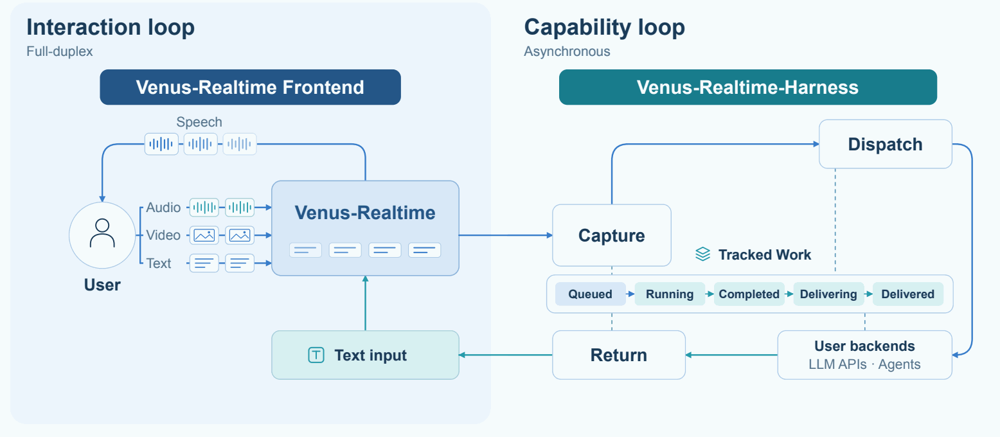
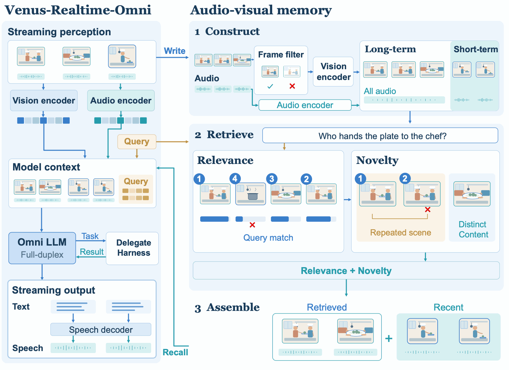
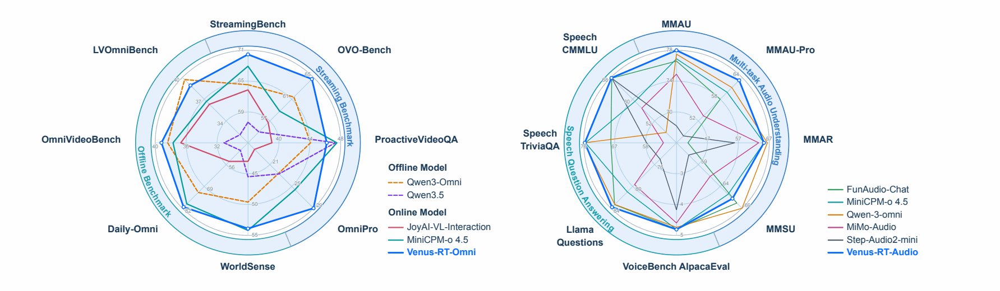

Venus-Realtime-Omni
Watch and listen continuously, respond proactively to visual events, and retain relevant context with training-free long-video memory.
VENUS-REALTIME BY VENUS TEAM
See the moment. Follow the conversation. Get things done.
Proactive audio–visual interaction with background reasoning and tools.
Help me plan a three-day road trip with safe pacing.
Aim for 5–7 driving hours daily, take a break every two hours…
What should each day look like for breaks and meals?
Explore three interaction patterns from our research.
Illustrated walkthroughs from Figure 4 of the manuscript.

Venus keeps watching and listening after the request, then responds when the relevant event happens.
Figure 4 · Paper example, not a recorded or live demo.
View the paper example ↗Venus-Realtime brings continuous perception, conversational control, and native speech generation into one streaming interaction loop.
Two separately trained 9B models support complementary settings: Venus-Realtime-Omni for audio–visual interaction and Venus-Realtime-Audio for spoken dialogue. Both can listen while speaking, distinguish backchannels from interruptions, and issue private requests for background work.
A shared runtime connects either model to Venus-Realtime-Harness. The frontend maintains live interaction while the harness executes delegated capabilities asynchronously and returns results to the ongoing session. Inputs, responses, delegation requests, and returned results share a causal timeline.
Watch and listen continuously, respond proactively to visual events, and retain relevant context with training-free long-video memory.
Understand sound and speech, produce native spoken responses, and adapt to interruptions without stopping for every backchannel.
Capture a task with its causal context, route it to a registered capability, and return its result for conversational delivery.
The interaction loop keeps perception and speech active. The capability loop handles external reasoning and tools in parallel.

Bind each request to its originating session and the evidence available when the request began.
Execute registered capabilities asynchronously while the frontend continues to perceive and speak.
Check result eligibility and coordinate delivery with the current conversation and speech playback.
Venus-Realtime-Omni adds a training-free memory module for extended audio–visual sessions. It stores selected historical frames, retrieves evidence using relevance and novelty, and combines recalled context with recent observations.
The memory module is separate from the fine-tuned dialogue policy and requires no additional parameter updates.

Selected findings reported in the September 9, 2026 manuscript. Comparison groups and evaluation settings differ across benchmarks.
Video benchmarks on which Venus-Realtime-Omni leads the evaluated online models.
Audio–visual understanding
Venus-Realtime-Omni
Audio understanding
Venus-Realtime-Audio
Full-Duplex-Bench v1.5
Venus-Realtime-Audio
| Benchmark | Model | Score |
|---|---|---|
| StreamingBench | Omni | 70.2% |
| OVO-Bench | Omni | 64.7% |
| Daily-Omni | Omni | 81.3% |
| MMAU | Audio | 78.0% |
| MMAU-Pro | Audio | 63.2% |
| Llama Questions | Audio | 83.8% |
| Speech CMMLU | Audio | 67.8% |
Omni and Audio denote the corresponding Venus-Realtime models. See the manuscript for datasets, prompts, and comparison models.
Venus-Realtime-Audio on Full-Duplex-Bench v1.5. The continuation metric is C_RESUME.
Response rate to user interruptions
C_RESPOND · a separate metric

Manuscript dated September 9, 2026.
@misc{venus2026realtime,
title = {Venus-Realtime: A full-duplex interaction
system with asynchronous delegation},
author = {{Venus Team}},
year = {2026},
note = {Ant Group and Tsinghua University.
Technical report, September 9, 2026}
}